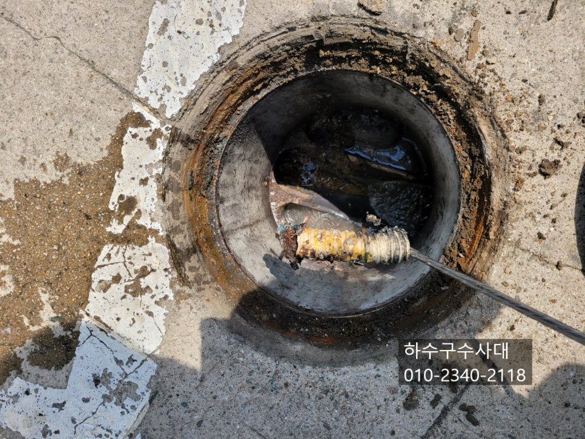
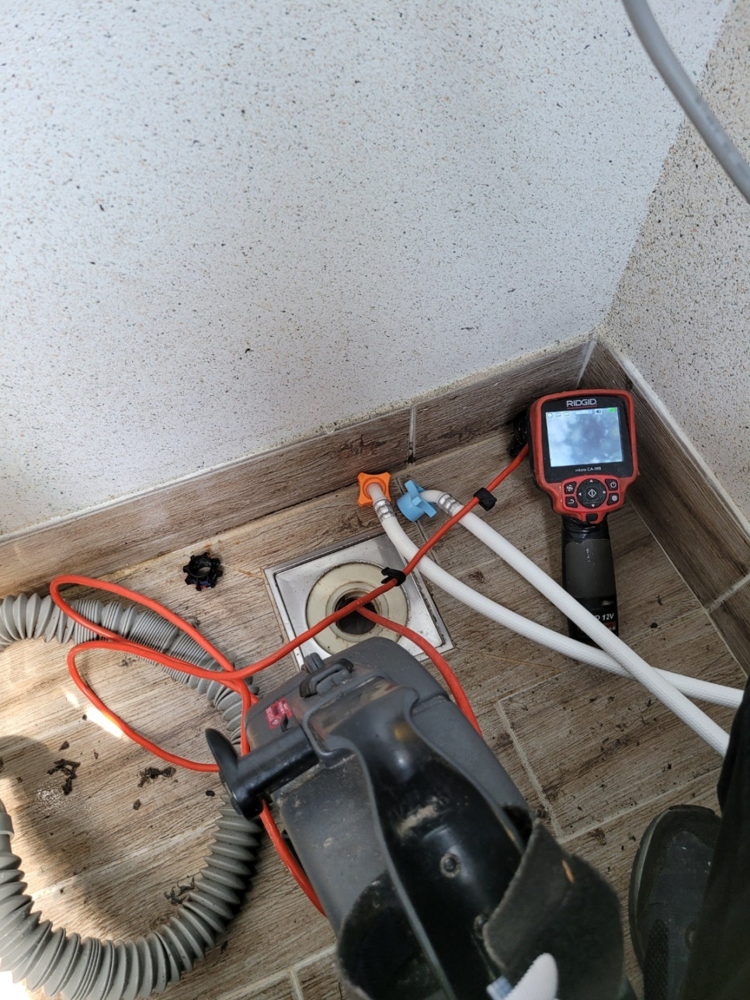
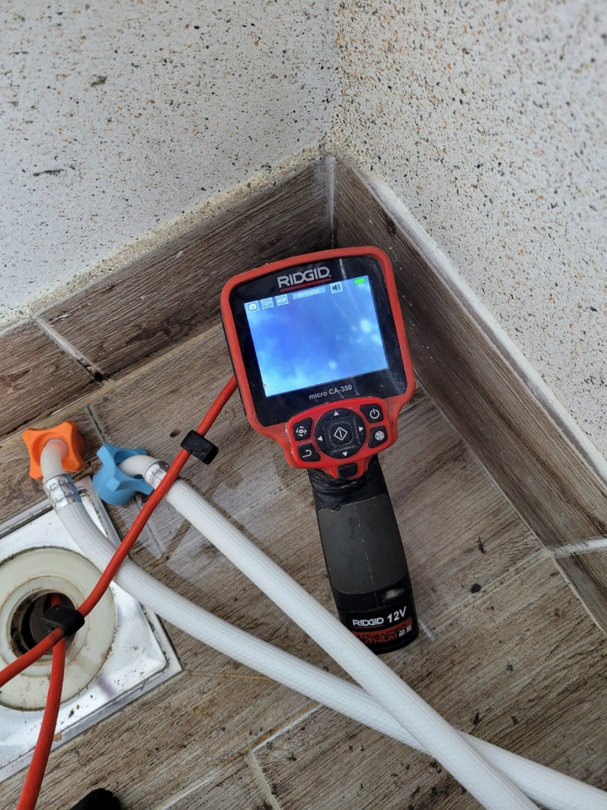
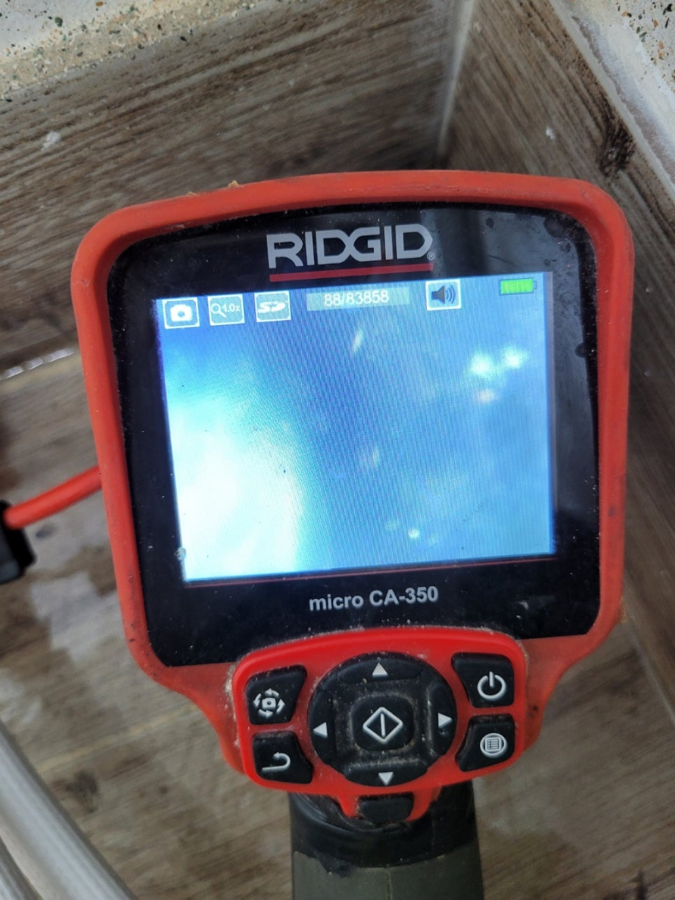
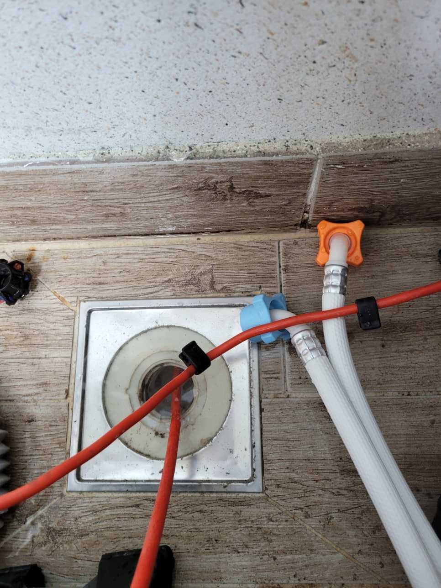
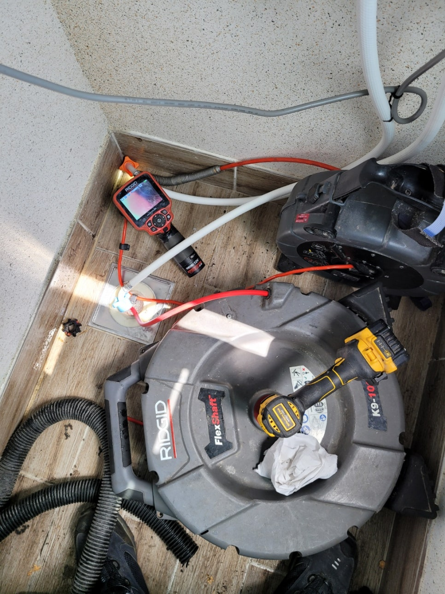
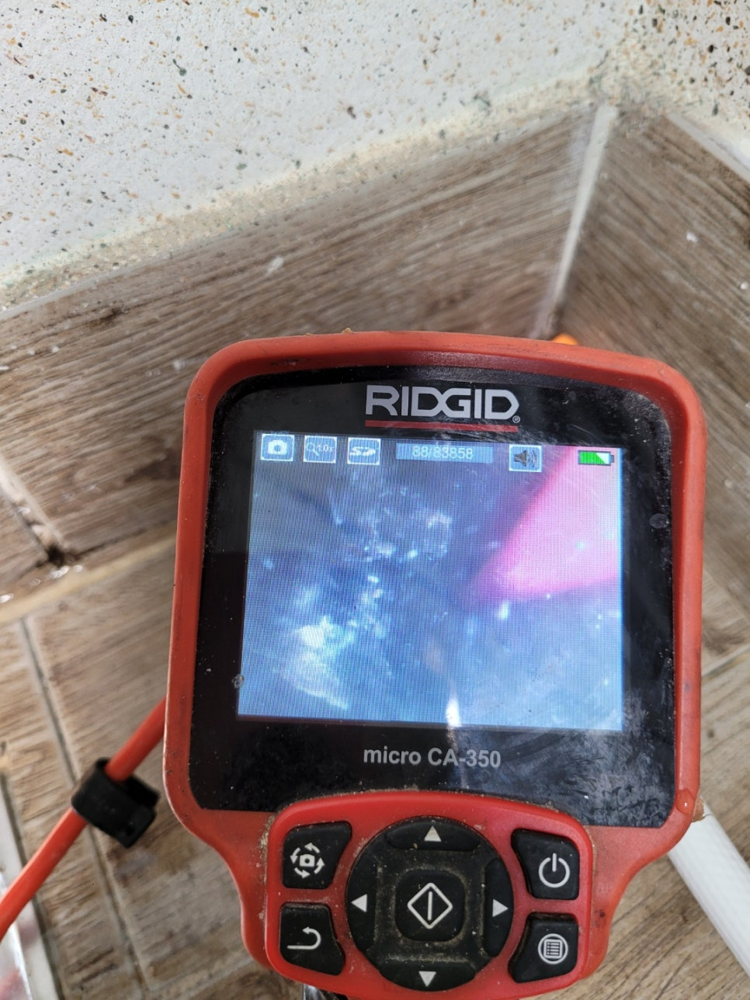

🏠 송탄 세탁실 하수구 막힘 서정동 고덕동 하수구 확실하게 뚫었습니다!
오산 싱크대막힘 전문 시공 후기

📋 작업 개요
- 위치: 오산
- 서비스 유형: 싱크대막힘, 하수구막힘, 배관막힘, 누수수리, 뚫는업체
- 작업 일시: 2022. 5. 3. 20:29
- 업체명: 하수구수사대 (010-5615-2118)
🔍 문제 상황
송탄 세탁실 하수구 막힘 서정동 고덕동 하수구
우리는 하루에도 몇 번이고
화장실 및 싱크대 등에서
물을 사용하고는 합니다.
실제로 우리나라는
내리는 강수량에 비해서
사용하는 물의 양이 많은 편이라
물 부족 국가로 분류되었다는
이야기가 들리기도 했는데요.
이처럼 많은 양의 물을
사용하고 있기에 관련된
여러 문제들도 발생하고 있습니다.
특히 오수를 배출하는 과정에서
이러한 문제가 자주 발생하죠.
사용함으로써 오염된 물을
밖으로 배출하기 위해
우리는 배관을 사용합니다.
그런데 기본적으로
오수는 깨끗한 물에 다량의 이물이
섞여 있는 것을 의미합니다.
그렇기에 오수가
배관을 타고 흘러갈 때
내부에 있던 이물들이
배관 벽에 붙어 버리는 상황을
연출하기도 합니다.
문제는 시간이 지나면서

🔎 원인 분석
💡 전문가 진단: 하수구수사대최신장비보유!1년as 보장!주말,공휴일도 ok!010-2340-2118
결국에는 배관이 막혀 버리는 문제가
발생한다는 것인데요.
이번 요청인
송탄 세탁실 하수구 막힘
서정동 고덕동 하수구 역시
다르지 않은 상황이었습니다.
비록 화장실이나
싱크대만큼은 아니지만
한 번 사용할 때 다량의 오수를
배출해 내는 만큼 웬만하면
배관의 크기가 큰 편에 속하죠.
하지만 그럼에도 불구하고
오랫동안 이물이 쌓였다면
충분히 내부가
막혀 버릴 수 있답니다.
그렇기에 이번 요청과 같이
서정동 고덕동 하수구
문제가 일어났다면 곧바로
전문적인 업체를 불러 주는 것을
기다리고 있는데요.
종종 업체를 부름으로써
나가는 비용을
조금이라도 아끼기 위해
직접 해결하려고
하시는 분들이 많습니다.
물론 이 역시도

🔧 작업 과정
괜찮은 방법이기는 하지만
우리가 생각하는 것보다
배관을 훨씬 예민합니다.
그렇기에 막혀있는 곳을 뚫으려
억지로 힘을 줬다가는
오히려 배관 내부에
손상을 주게 돼요.
이는 후에 관에 생긴
스크래치 등으로 인해
누수가 발생하는
원인이 되기도 합니다.
그러므로 이러한 문제를
마주했을 때에는
혼자 해결하기 보다
전문가의 손길을 받는 게 좋다고
말씀을 드리고 싶습니다.
이번 현장에서는
우선 막혀있는 원인이
무엇인지부터 파악하는
단계를 거쳤습니다.
내시경을 통해
어느 부분에서 어떠한 이물질로
막힌 것인지 확인한 다음
곧바로 뚫는 작업에
들어가도록 했습니다.
현장에서 사용한 스프링기를 통해
최대한 빠르게
작업을 할 수 있도록 했는데요.
다행히도 별다른 문제 없이
수월하게 해결했어요.
서정동 고덕동 하수구 뚫는 작업을
마치고 난 이후에도
내시경 카메라를 동원하여
내부가 제대로 뚫렸는지 확인하고,
이후 여러 차례 물을 흘려보내면서
제대로 작업이
마무리되지 않은 곳은 없는지
꼼꼼하게 확인하는 절차를 거칩니다.
다행히도 이러한 마무리 단계에서는
그다지 문제가 될 만한 일이
보이지 않아
요청을 본격적으로 마쳤답니다.


✅ 작업 완료
오늘 보신 작업과 마찬가지로
배관 막힘으로 인해
골치가 아프신 분들이 있다면
언제든지 슬기로운 하수구 생활의
손길을 느껴 보시기를 바랍니다.
하수구수사대
최신장비보유!
1년as 보장!
주말,공휴일도 ok!
010-2340-2118
경기도 오산시 오산로160번길 15 201-L16호




⚠️ 베란다 누수 및 방수 관리 방법
- ✅ 비가 많이 올 때 창틀 주변이나 아래층 천장에 얼룩이 생기는지 정기적으로 확인해 보세요.
- ✅ 우수관 주변 실리콘 마감이 들뜨거나 깨진 틈새가 있는지 손상 여부를 수시로 체크하세요.
- ✅ 베란다 바닥 타일의 줄눈(메지)이 소실되면 그 틈으로 물이 침투하여 누수가 유발됩니다.
- ✅ 누수 의심 증상 발견 시 방치하면 아래층 손실이 커지므로 즉시 전문가의 진단을 받으십시오.
💡 핵심 정리
- 확실한 장비 작업(내시경 점검 및 샤프트 스케일링)으로 원인을 뿌리 뽑습니다.
- 작업 후 1년 이내에 동일한 부위 재발 시 100% 무상 A/S 서비스를 보장합니다.
- 서울 · 경기 · 인천 전 지역에 24시간 언제든 긴급 출동할 수 있도록 항시 대기 중입니다.
❓ 자주 묻는 질문 (FAQ)
🚨 오산 싱크대막힘 문제로 고민이신가요?
정확한 원인 진단과 확실한 시공으로 재발 없는 해결을 약속드립니다.
24시간 긴급 출동 | 서울 · 경기 · 인천 전지역 | 1년 내 재발 시 무상 A/S